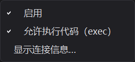
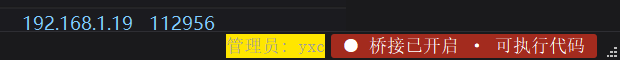

Local Control Channel¶
Overview¶
The "Local Control Channel" is a small service the application opens on this machine only: external scripts (command line, another Python process, automation tools) can use it to read the application state, take screenshots, and — when explicitly allowed — execute code and operate the interface.
It serves two main purposes:
- On-site troubleshooting: when an issue only reproduces on a specific machine, support can read the real state inside the application instead of asking for screenshots and log exports
- Batch work and automation: apply the same operation to many machines, or connect the application to an existing automation flow
Off by default, and only visible to administrators
The channel is off by default and must be enabled manually after each start. Its menu entry is only shown to accounts with administrator or higher permission (see Pipeline Management - Account Permissions).
Enabling and Disabling¶
Open 工具 (Tools) → 本机控制通道 (Local Control Channel):

| Menu item | Description |
|---|---|
| 启用 (Enable) | Checked means running, unchecked means stopped; the check mark always matches the real state |
| 允许执行代码（exec） | Off by default. Allows executing arbitrary code remotely; changing it requires stopping and re-enabling the channel to take effect |
| 显示连接信息… | Shows the address, token, current state, and the paths of the config file and audit log; the text can be selected and copied |
Status Bar Indicator¶
While the channel is running, an indicator appears on the right side of the status bar:

| State | Indicator |
|---|---|
| Running | Amber ● 桥接已开启 |
| Running with code execution allowed | Red ● 桥接已开启 · 可执行代码 |
The indicator sits to the right of the account label; click it to see the connection info:

It re-checks the real state every 3 seconds: it disappears by itself if the channel is stopped or crashes, and it is not shown at all while the channel is off — the status bar never claims the channel is running when it is not.
Connection Info¶
"显示连接信息…" shows the current address and token, plus the location of two files:
| Content | Location |
|---|---|
| Config file (token, port, on/off state) | %APPDATA%\XpApps\bridge.json |
| Audit log | bridge_audit.log in the temp directory (the full path is shown in the dialog) |
Example call from outside (one JSON object per line, framed by \n):
import json
import socket
def call(action, payload=None, port=8765, token="<token from the info dialog>"):
with socket.create_connection(("127.0.0.1", port), timeout=20) as s:
req = {"id": 1, "action": action, "payload": payload or {}, "token": token}
s.sendall((json.dumps(req, ensure_ascii=False) + "\n").encode("utf-8"))
buf = b""
while not buf.endswith(b"\n"): # screenshots are large, read until the newline
chunk = s.recv(65536)
if not chunk:
break
buf += chunk
return json.loads(buf.decode("utf-8"))
print(call("status")) # window title / size / visibility
print(call("screenshot")) # main window screenshot (base64 PNG)
print(call("exec", {"code": "result = 1 + 1"}))
| Action | Payload | Description |
|---|---|---|
ping |
— | Returns pong; use it to check the channel |
status |
— | Window title, size, visibility, minimized state |
screenshot |
— | Main window screenshot (base64 PNG) |
exec |
{"code": "..."} |
Run Python code and return its output; requires code execution to be allowed |
click |
{"name": "widget"} |
Click a widget by name |
set_text |
{"name": "...", "text": "..."} |
Set a widget's text |
Security Notes¶
- It only binds to the loopback address
127.0.0.1, so other machines cannot connect; other programs on the same machine can - The token is generated randomly the first time you enable the channel and stored in the user
directory (
%APPDATA%\XpApps\bridge.json), readable only by the current user; requests with a wrong token are rejected outright - "Allow code execution (exec)" is equivalent to handing over everything the application can do — enable it only when needed and turn it off afterwards, do not leave it on permanently
- Every call leaves a record in the audit log (time, action, success/failure, first 120 characters of executed code)
- The menu entry is only shown to administrators; regular artists cannot see it
- If the feature is not needed, a release build can be shipped without loading it at all
FAQ¶
"Bridge 启动失败（端口 8765 可能被占用）" is shown
The port is already used by another program. Use a different port, or close the program holding the port and try again.
Does the channel stay after closing the application?
No. It ends together with the application; you need to enable it manually again next time.
How do I get a new token?
Delete %APPDATA%\XpApps\bridge.json; a new token is generated the next time you enable the channel.
Why can't I see the "Local Control Channel" menu?
It is only shown to administrator accounts and above. See Pipeline Management - Account Permissions.